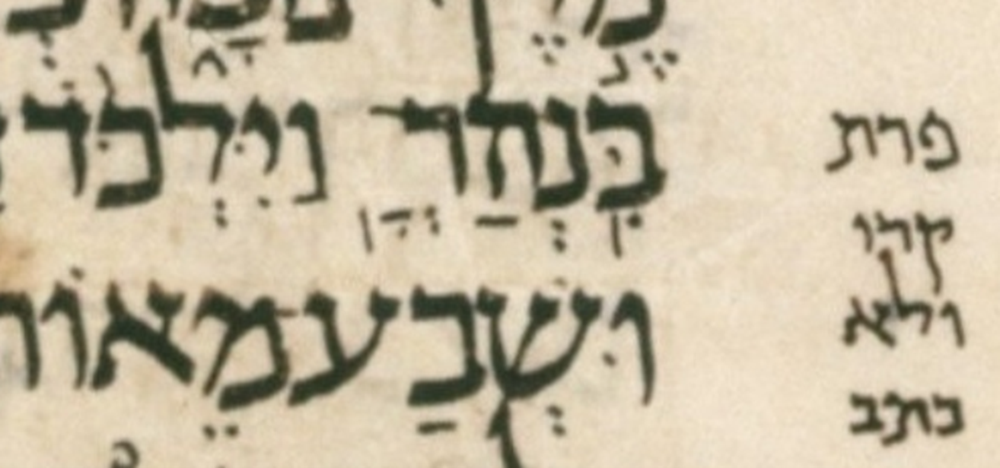

| n | 17 |
| citation:book | 2Sam |
| citation:c | 8 |
| citation:v | 3 |
| citation:position | 13 |
| author:name | Ben Denckla |
| author:mail | bdenckla@alum.mit.edu |
| author:confirmed | true |
| description | Note that while creating the pointed qere, the transcriber added a dagesh to pe |
| lc:folio | Folio_172B |
| lc:column | 2 |
| lc:line | 20 |
| lc:credit | Credit: Sefaria.org. |
| reftext | פְּרָֽת׃ |
| refuni | pe dagesh sheva resh qamats meteg tav sof-pasuq |
| changetext | פְּרָֽת׃ |
| changeuni | pe dagesh sheva resh qamats meteg tav sof-pasuq |
| notes:note | The manuscript’s pointed ketiv (MPK) is אְׄאָֽׄאׄ׃. (We use אׄ (א with an extraordinary upper dot) to hold marks not associated with a parent letter.) |
| notes:note-2 | The MPK has no letter to carry a dagesh for the qere’s פ. The MPK (points on no letters) is sheva, qamats, and siluq. |
| transnotes:transnote:action | Add |
| transnotes:transnote:type | a |
| transnotes:transnote:beforetext | פּ |
| status | Pending |
| type | NoTextChange |